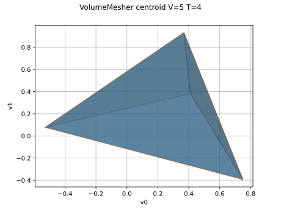

VolumeMesher¶
(Source code, svg)

- class otmeshing.VolumeMesher(*args)¶
Build a volume mesh from a surface mesh associated to a convex volume.
Tetrahedralizes a closed triangular surface mesh by creating a fan of tetrahedra from an apex vertex to each boundary triangle.
Methods
build(surface)Build a volume mesh from a surface mesh.
Apex strategy accessor.
Accessor to the object's name.
getName()Accessor to the object's name.
hasName()Test if the object is named.
setApexStrategy(strategy)Apex strategy accessor.
setName(name)Accessor to the object's name.
- __init__(*args)¶
- build(surface)¶
Build a volume mesh from a surface mesh.
- getApexStrategy()¶
Apex strategy accessor.
- Returns:
- strategyint
VolumeMesher.CENTROID or VolumeMesher.FIRSTVERTEX.
- getClassName()¶
Accessor to the object’s name.
- Returns:
- class_namestr
The object class name (object.__class__.__name__).
- getName()¶
Accessor to the object’s name.
- Returns:
- namestr
The name of the object.
- hasName()¶
Test if the object is named.
- Returns:
- hasNamebool
True if the name is not empty.
- setApexStrategy(strategy)¶
Apex strategy accessor.
- Parameters:
- strategyint
VolumeMesher.CENTROID or VolumeMesher.FIRSTVERTEX.
- setName(name)¶
Accessor to the object’s name.
- Parameters:
- namestr
The name of the object.

{kind=link}